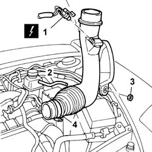

1048A54 TURBOCHARGER air inlet HOSE from rigid pipe - R.R.
- Path
- Procedures > 10 ENGINE > 1048 ENGINE AIR SUPPLY CIRCUIT > 1048A VACUUM AIR CIRCUIT > 1048A54 TURBOCHARGER air inlet HOSE from rigid pipe - R.R.
- Kind
- repair procedure (removal / refitting; the operation number is the code)
- Applies to
- engines: 2.0 TB; all production periods
- Interactive page
- https://sloeber94.github.io/elrnDB-lThss/en/#/498857
Applies to: engines: 2.0 TB; all production periods
 Removing
Removing
 Refitting
RefittingSee in Op. 7040D50 ENGINE COMPARTMENT UPPER SOUND INSULATION SHIELD - R.R.
See in Op. 1048A21 AIR INLET HOSE FROM INTAKE TO FILTER - R.R.
See in Op. 1048A50 air inlet pipe to turbocharger - r + r
See in Op. 1048A10 COMPLETE AIR FILTER -R.R.
See in Op. 7055B54 PROTECTION/GUARD under engine - R.R.
1. Disconnect the electrical connection for the barometric pressure sensor.
2. Disconnect the turbocharger by-pass valve pneumatic connection.
3. Undo the nut fixing the resonator.
4. Disconnect the fastening band and remove the turbo air intake hose complete with resonator.
- With the assembly at the bench, disconnect the air intake hose from the resonator.

Applies to: engines: 2.0 TB; all production periods
Refitting
Removing- With the assembly at the bench, fit the turbocharger air intake hose, connecting it to the resonator.
- Place the assembly in the engine compartment and connect it to the turbocharger.
- Connect the turbocharger by-pass valve pneumatic connection.
- Connect the electrical connection for the barometric pressure sensor.
- Tighten the fixing nut.
See in Op. 7055B54 PROTECTION/GUARD under engine - R.R.
See in Op. 1048A10 COMPLETE AIR FILTER -R.R.
See in Op. 1048A50 air inlet pipe to turbocharger - r + r
See in Op. 1048A21 AIR INLET HOSE FROM INTAKE TO FILTER - R.R.
See in Op. 7040D50 ENGINE COMPARTMENT UPPER SOUND INSULATION SHIELD - R.R.
Topics linked from this page (5)
- 1048A10 COMPLETE AIR FILTER -R.R.
- 1048A21 AIR INLET HOSE FROM INTAKE TO FILTER - R.R.
- 1048A50 air inlet pipe to turbocharger - r + r
- 7040D50 ENGINE COMPARTMENT UPPER SOUND INSULATION SHIELD - R.R.
- 7055B54 PROTECTION/GUARD under engine - R.R.